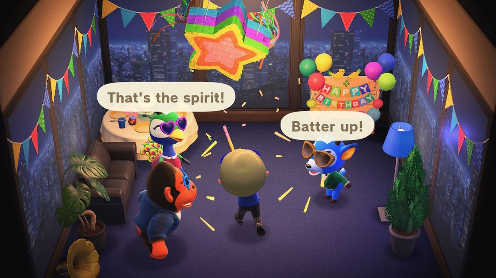
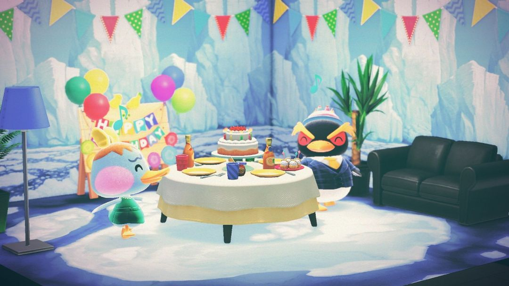
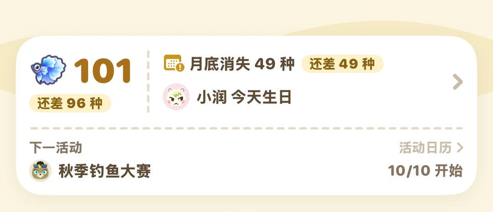

生日：你自己的生日和島民生日
生日派對怎麼過、能拿到什麼，島民生日送什麼最加分
島上的生日分兩種：一種是你自己的，一年一次，出門就有人幫你辦派對，K.K. 也會特地趕來唱歌；另一種是島民的，壽星那天整天待在家裡等你上門，送對了禮物，交情會漲得比平常快。
兩種生日都會提前 8 天貼在公布欄上。自己的生日不用準備什麼，記得當天上線、走出家門就好；島民生日最好事先在 Nook商店準備一件禮物和一張包裝紙，當天帶過去。下面先說你自己的生日，再說島民的。
01你的生日：出門就有派對
生日是建立角色時填的那天。填了 2 月 29 日的，平年就在 2 月 28 日過。
提前 8 天，服務處前的公布欄會貼出通知；到了當天早上，西施惠或狸克會在廣播裡再提一次。
當天一走出家門，和你交情最好的島民就會迎上來，把你拉去他家。屋裡已經布置好了，中間擺著蛋糕，另外還有兩位島民在等著。大家舉著拉炮唱起島歌，你吹熄蠟燭，拉炮一響，就能收到一件生日禮物。
接著他們會遞給你一根棍子，讓你去打掛著的彩罐。打得越快，掉出來的生日紙杯蛋糕越多，最後主人會把蛋糕全都塞給你。之後島民們會一直在屋裡跳舞唱歌，等你離開，派對才算散場。
派對結束後再出門，會收到媽媽寄來的信，信裡附著一個「媽媽手作蛋糕」。另外還會解鎖一個 Nook哩數成就。

吹完蠟燭打彩罐，打得越快掉出的紙杯蛋糕越多（英文版畫面）（圖：Nookipedia）
小提示派對由跟你交情最好的那位島民來辦。想知道自己跟誰最好，等巴獵島上星薇的攤位開張以後，花 1,000 鈴錢就能請她看看你和某位島民的交情。
02生日紙杯蛋糕怎麼用
彩罐裡掉出來的生日紙杯蛋糕可以吃，吃了有力氣搬樹、敲石頭；也能擺出來當裝飾，但是賣不掉。
更划算的用法是拿去送島民，其他島的島民也算。交情夠好的島民收下以後，會回送生日系列裡的一件：
| 生日系列 | 類型 |
| 生日蛋糕、生日蠟燭、生日立牌、生日桌 | 家具 |
| 生日帽、生日墨鏡 | 服飾 |
| 派對壁紙、派對地板 | 牆和地板 |
要是交情還不夠，或是這套你已經拿齊了，島民就只會回一件普通禮物。所以紙杯蛋糕最好留到跟你關係好、而且你還缺這套家具的時候再送。
03K.K. 來唱生日歌
生日當天，K.K. 會來服務處前的廣場，不管那天是星期幾都會來。他唱的是《你的生日》，片尾捲動的字幕換成了島民們的祝福。唱完以後，他會把這首歌的唱片送給你。
朋友當天來你島上玩，可以給你寫留言。K.K. 第一次唱這首歌時會把這些留言放給你看，之後留言還會以朋友的名義寄到你的郵筒。
要是生日剛好碰上釣魚大會或捕蟲大會，K.K. 會改到隔天再來。
注意《你的生日》這張唱片拿到以後，沒辦法再從 Nook購物 訂購，別順手賣掉。
咖啡廳「鴿巢」也會幫你過生日：生日當天去喝一杯，喝完老闆會祝你生日快樂。
04島民生日：去他家送禮
島民的生日也是提前 8 天貼上公布欄，當天早上廣播。壽星那天一整天都待在家裡，屋裡放著《你的生日》。去不去隨你，不過去了送份禮物能增加交情，隔天還會收到他寄來的回禮。
送什麼東西，增加的交情差很多：
| 送的東西 | 交情 | 包裝後 |
| 蟲、魚、化石價值 2,000 鈴錢以上；其他東西 500 鈴錢以上 | +5 | +8 |
| 蟲、魚、化石 501～1,999；其他東西 126～499 | +4 | +6 |
| 海洋生物；更便宜的東西 | +3 | +4 |
| 空罐、長靴、輪胎、雜草這類垃圾 | −5 | — |
從表裡可以看出來，包裝這一步很值得：同一件東西包好再送，最高一檔能從 +5 漲到 +8。最省事的做法是在 Nook商店買一件 500 鈴錢以上的家具或衣服，包好再送。包裝紙也在 Nook商店買，順便一起帶上。垃圾千萬別拿去充數，會倒扣 5 點。
兩位島民同一天生日的話，會擠在其中一家合辦，兩位都能送禮。朋友也可以來你島上給壽星送禮物。

同一天生日的兩位島民會在一家合辦，都戴著生日帽（圖：Nookipedia）
05怎麼知道誰哪天生日
遊戲裡只能靠公布欄，而且要到提前 8 天才貼出來，想早點幫壽星挑禮物就有點趕。動森圈圈的島民圖鑑裡寫著每位島民的生日，可以提前查；首頁卡片會在你島上島民生日當天顯示出來，一打開就知道是誰在過生日。

動森圈圈首頁：住在你島上的島民過生日，當天會寫「××今天生日」
06版本變化
巴獵島上星薇的攤位和咖啡廳「鴿巢」都是 2.0 加入的。
動森圈圈 · iOS App 和微信小程式都搜「動森圈圈」